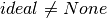
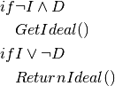

This is a generalization of the Quality function used by the optimizers to assess the quality of a candidate solution. In order to generalize it I’m making the function that maps an input to an output a parameter, along with the domain. The domain is only needed if the ideal needs to be calculated. If it is set or None is used, then only the mapping-function is needed. If the mapping is a real-valued one, then the image can be calculated and the ideal taken from it.
QualityMapping |
|
QualityMapping.ideal |
|
QualityMapping.image |
|
QualityMapping.__call__ |
The Ideal Value (ideal) can be used as a stopping condition if it is known or calculatable from the mapping-function and domain. Using I to mean  and D to mean the ideal property satisfies the following.

This means that if neither the domain nor the ideal is set then the ideal will be None so clients for this class can test to see if the ideal is available or not.